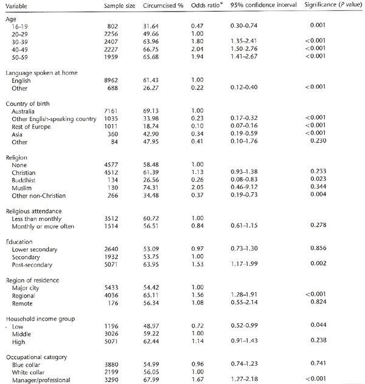
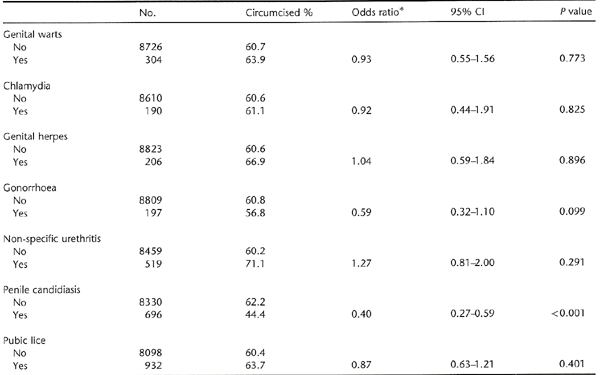
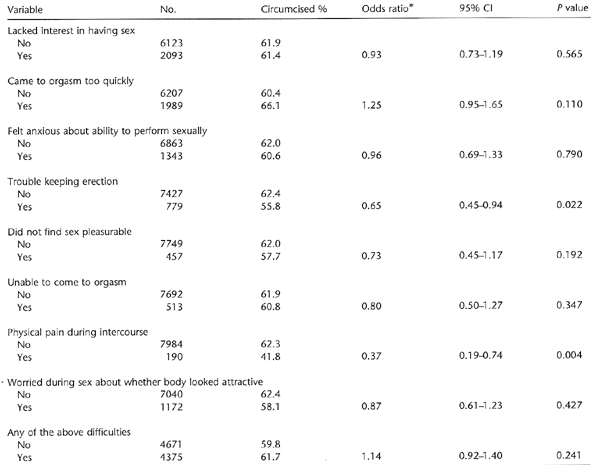
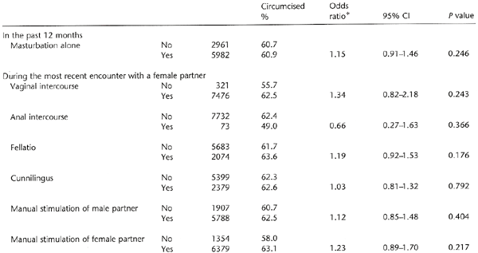

THE CIRCUMCISION REFERENCE LIBRARY
ORIGINAL RESEARCH ARTICLE
1National Centre in HIV
Social Research, University of New South Wales, Sydney;
2Australian Research Centre in Sex, Health and
Society, La Trobe University, Melbourne,
Australia; 3Department of Psychology, University
of Sussex, Brighton, UK; 4National
Centre in HIV Epidemiology and Clinical Research, University
of New South Wales;
5Health Promotion Unit, Sydney South West Area
Health Service (Eastern Zone),
Sydney, Australia
Summary: The
results from a telephone survey in 2001–02 of a
probability sample of Australian households including 10,173
men aged 16–59 (response rate 69.4%) are used to assess
the prevalence of circumcision across social groups in
Australia and examine lifetime history of sexually
transmissible infection (STI), sexual difficulties in the
last year, sexual practices including masturbation, and
sexual attitudes.
More than half (59%) of the men were
circumcised. Circumcision was less common among younger men
(32% aged <20) and more common among the Australian born
(69%). After correction for age, circumcision was unrelated
to reporting STI, but appeared to protect against penile
candidiasis. Circumcision was unrelated to most sexual
difficulties, but circumcised men were less likely to report
physical pain during intercourse or trouble keeping an
erection; reasons for this are unknown. There were no
significant differences in practices at last sexual encounter
with a female partner or in masturbation alone. Circumcised
men had somewhat more liberal sexual attitudes.
Neonatal circumcision was routine in
Australia until the 1970s. It appears not to be associated
with significant protective or harmful sexual health
outcomes. This study provides no evidence about the effects
on sexual sensitivity.
Keywords: circumcision, sexually transmissible
diseases, candidiasis, sex disorders,
sexual behaviour
Introduction
In the last generation, Australia has changed from a country where most newborn boys are circumcised to one where circumcision is the minority experience. This change has been led largely by medical service providers, influenced by economic, legal, human rights and health service considerations. New evidence about the lower risk of HIV acquisition by circumcised men in developing countries has re-opened the debate both in medical settings and in the popular media.
In this paper we examine data from a national survey to answer five questions:
Previous estimates of the age-related prevalence of circumcision in Australia have been based on health service or insurance statistics (i.e. incidence, not prevalence); one analysis showed a drop over the 1970s from about 50% to 40% of newborn boys circumcised.1 A study in Western Australia found that in the 1980s and 1990s less than 10% of babies were circumcised.2 The same authors show that as the Medicare public health insurance system no longer covers routine neonatal circumcision, medical indications such as phimosis are reported more frequently.3 Current advice to parents from the Paediatrics and Child Health Division of the Royal Australasian College of Physicians is based on a review and policy statement that concludes that ‘there is no medical indication for routine male circumcision’.4 Parents may be given a leaflet summarizing the pro and con positions and allowed to make the decision themselves.5
There is some evidence that uncircumcised men may be more prone to STIs, particularly ulcerative disease.7–9 However, recent evidence that this is the case in developed countries is comparatively sparse. The United States National Health and Social Life Survey (NHSLS) found no protective effect of circumcision.10 Nor did the 2000 British National Survey of Sexual Attitudes and Lifestyles.11 No previous population-based studies in Australia have examined the relationship between circumcision status and STI history. A study in a Sydney sexual health clinic concluded that circumcision had no significant effect on the incidence of common STIs, but the authors remarked that this finding might not extend to other settings with poorer hygiene and a different spectrum of infections.12
Opinions are mixed on the effects of circumcision on sexual function and pleasure. It is often suggested that although circumcision may make the glans penis less sensitive to superficial touch because of the keratinization of the epithelium, circumcised men have a sexual benefit from this loss of sensitivity because they can ‘last longer’ during intercourse.6,13 The NHSLS did not find a difference between circumcised and uncircumcised men in whether they reached orgasm too quickly.10 The study did find, however, that older uncircumcised men were more likely to have trouble with achieving or maintaining an erection.
In the 19th century, circumcision was sometimes recommended as a preventive against masturbation, or perhaps a punishment for it.14,15 However, the NHSLS found that circumcised men were more likely to masturbate. Circumcised men were more likely to be white and well educated, and had a wider sexual repertoire.10
Box 1 Questions from the Australian Study of Health and Relationships telephone surveyCircumcision
Have you been circumcised? (Prompt: Has the loose skin at
the tip of your penis been removed?)
STDs
The following questions are about sexual health. Not all
the questions are about sexually transmissible
diseases.
Have you ever had any of the following? I will read out a
list, and ask you to say yes or no to each one.
Pubic lice or crabs?
Genital warts? (Includes anal warts if he asks.)
Chlamydia?
Genital herpes?
Syphilis?
Gonorrhoea?
Non-specific urethritis or NSU?
Trichomoniasis or ‘trike’?
Penile candida or thrush?
Masturbation
In the last 12 months, have you ever masturbated alone?
(Prompt if necessary: stimulated yourself.)
Sexual practices at last encounter with a female
partner
The last time you had sex, did you put your penis into her
vagina?
The last time you had sex, did you put your penis into her
anus?
The last time you had sex, did you have oral sex with your
mouth on her vaginal area?
The last time you had sex, did you have oral sex with her
mouth on your penis?
Did you stimulate her clitoris or vaginal area with your
hand?
Did she stimulate your penis with her hand?
And the last time you had sex with her, did you have an
orgasm?
Sexual difficulties
The next questions are about your sexual life now.
During the last year has there been a period of one month
or more when you lacked interest in having sex?
Has there been a period of one month or more when you were
unable to come to orgasm (a climax)?
Has there been a period of one month or more when you came
to orgasm (a climax) too quickly?
Has there been a period of one month or more when you
experienced physical pain during intercourse?
Has there been a period of one month or more when you did
not find sex pleasurable?
Has there been a period of one month or more when you felt
anxious about your ability to perform sexually?
Has there been a period of one month or more when you had
trouble keeping an erection when you wanted to?
[If yes] Have you ever used any treatment to help with
erections? For example, injections or tablets like
Viagra.
During sex do you worry whether your body looks
unattractive?
Methods
The methods used in the Australian Study of Health Relationships (ASHR) are described in detail elsewhere.16 Briefly, between May 2001 and June 2002, computer-assisted telephone interviews were completed by a representative sample of 10,173 men aged 16–59 years from households in all states and territories of Australia. Respondents were selected via modified random-digit dialling, with over-sampling of men and residents of some geographical areas. The overall response rate was 69.4%. The study protocol was approved by the human ethics committees of La Trobe University, the University of New South Wales and the Central Sydney Area Health Service.
The questions used to assess circumcision status, STI history, masturbation, sexual practices at last encounter, and sexual difficulties are displayed in the Box 1. (Responses about same-sex partners are not analysed here.) HIV infection was not included in the list of STIs because too few men reported being HIV-positive (0.1%) to allow analysis by circumcision status. We had previously derived a six-item scale of sexual liberalism in which higher scores meant more liberal attitudes (α = 0.75).17
AnalysisData were weighted to adjust for the probability of household selection (households with more phone lines were more likely to be contacted) and to adjust for the probability of selection within a household (individuals living in households with more eligible people were less likely to be selected). Data were then weighted to match the Australian population on the basis of age, gender and area of residence.
Weighted data were analysed using the survey estimation commands in Stata Version 7.0.18 Correlates of outcome variables were identified using univariate logistic regression.
| Table 1
Demographic correlates of circumcision (univariate
analyses)  |
Results
Demographics
Of the men surveyed, 58.7% reported that they had been circumcised. A further 0.4% either refused to answer or were unsure. Crude odds ratios (OR) for the relationships between circumcision status and demographic variables are shown in Table 1. Compared with uncircumcised men, circumcised men were likely to be older, to speak English at home and to have been born in Australia. Indeed, among men under 20, the majority were uncircumcised, reversing the pattern among the over 30s, of whom two-thirds had been circumcised. Buddhists and other non-Christians, but not Muslims, were less likely to be circumcised. Circumcision was somewhat more common among those with post-secondary education, those living in regional (but not remote) areas, and those in managerial or professional occupations.
| Table 2
Association between circumcision status and lifetime
diagnosis with a sexually transmissible
infection  |
Sexually transmissible infections
In an attempt to correct for exposure to infection, we examined the correlations between circumcision and experience of various STIs using a logistic regression model including age category and numbers of opposite-sex and same-sex partners. Thus the odds ratios reported in Table 2 are the ratios after adjustment for these effects (full table available on request). The condition for which circumcision appears to exert a protective effect is – not surprisingly – penile candidiasis (which is much more common among women than men,19 but also occurs under the foreskin). Because many of the uncircumcised men are young and have been exposed to fewer partners than those over 30, the raw percentages of men with a history of thrush (9.8% of circumcised and 5.5% of uncircumcised men) underestimate the protective effect of circumcision. This is reflected in the adjusted odds ratio of 0.4. No significant protective effect of circumcision is discernible for genital warts, chlamydia, genital herpes, gonorrhoea, non-specific urethritis or pubic lice.
Circumcision can only be a protective factor in men who are exposed to an STI. An additional analysis limited to the men who had had (1) more than 10 female partners, (2) more than 10 male partners, or (3) more than five male partners and more than five female partners (i.e. only those exposed to substantial STI risk) also found that the difference between circumcised and uncircumcised men was significant only for candidiasis (OR 0.492, 95% confidence interval [CI] 0.297–0.814, P = 0.006).
Sexual difficulties
The ASHR questionnaire included a set of items about sexual difficulties (see Box 1). Respondents were not asked whether they perceived these conditions to be problems for them. Nor were they asked any direct questions about penile sensitivity. For two difficulties, trouble keeping an erection and physical pain during intercourse, there was a statistically significant difference between circumcised and uncircumcised men after adjustment for age (Table 3). Trouble keeping an erection was strongly correlated with age, occurring in just over 4% of men under 30 and 19% of men in their 50s.20 Circumcised men were less likely to report this difficulty, and the correlation remained after adjustment for age category. It was most noticeable in the over 50s, among whom 15% of circumcised men and 27% of uncircumcised men reported trouble keeping an erection.
Physical pain during intercourse was also less common among circumcised men. Although this difficulty is rare in men (2.4%) compared with women (20.3%),20 it was more common among uncircumcised men, and the difference between the groups was apparent in all age categories. There was no evidence of circumcision helping men to ‘last longer’: 26% of circumcised men but 22% of uncircumcised men reported reaching orgasm too quickly for at least one month in the previous year. However, this difference was not significant (P = 0.11) after adjustment for age category.
| Table 3
Association between circumcision status and having
experienced sexual difficulties for a period of one month
or more in the previous year  |
Sexual practices
There was no significant difference in the prevalence of masturbation in the past year between circumcised and uncircumcised men (Table 4).
Table 4 also shows the percentage of men who engaged in various sexual practices at their last encounter with a female partner. None of the practices showed significant differences. Despite the commonly quoted view among groups where circumcision is the norm that women prefer the circumcised penis,21 there was no evidence of any variation in practice that might indicate reluctance by women to handle the uncircumcised penis or to perform fellatio. After adjustment for age, circumcised men were no more or less likely to receive fellatio from their female partners than uncircumcised men. Similar results were obtained in an analysis of practices with male partners (not shown).
Sexual attitudes
The mean score on the six-item scale of sexual liberalism was 3.29 (95% CI 3.24–3.34) for circumcised men and 3.20 (95% CI 3.15–3.25) for uncircumcised men. (Higher scores represent more liberal attitudes.) A regression model adjusting for age category found this difference to be significant (t = 2.65, P = 0.008).
| Table 4
Association between circumcision status and having engaged
in particular sexual practices  |
Discussion
These results come from a large representative sample survey with a good response rate. Internal and external evidence suggests that telephone interview is a good method for collecting sensitive data on sexuality.16 Although experience of STIs is likely to be underreported (men may have forgotten infections that occurred long ago or may not know the name of what they had), a self-report of circumcision status is likely to be accurate. A study of the validity of a self-report of circumcision status among adolescent males demonstrated high sensitivity (91%) and high specificity (95%) among those who knew their circumcision status.22 In that study of largely Black and Hispanic boys, 27% did not know their circumcision status, whereas in our study only 0.1% did not know their status, perhaps reflecting our predominantly adult sample. We therefore consider substantial misclassification unlikely.
We have described demographic differences among subgroups of the Australian population in circumcision prevalence, and found a statistically significant but minor effect on sexual health in the greater risk of penile candidiasis among the uncircumcised. Although circumcised men were less likely to acquire candidiasis, they did not appear to be protected against any more serious STIs.
Uncircumcised men reported higher rates of pain during intercourse than circumcised men (though much lower rates than women) and difficulty with erection in their 50s. Although minor damage to or untreated infection of the foreskin, or conditions such as balanitis xerotica obliterans,23 might account for the higher reports of pain, the reason for the higher prevalence of difficulty with erection in the older uncircumcised men is unknown and warrants investigation.
An analysis of sexual health correlates of circumcision status based on the US NHSLS (from which some of our questions were drawn)24 also found slightly higher rates of sexual difficulties, specifically trouble with erection, performance anxiety and lack of enjoyment, among the uncircumcised men. The difference was significant among the oldest age group born in the 1930s and early 1940s.10 Being circumcised was less common among those of Black or Hispanic ethnicity than among Whites, and among men of lower educational status. Uncircumcised men were less likely to report masturbation. The authors speculated that ‘it is possible that the association between masturbation frequency and circumcision status provides a clue. If older men require more direct stimulation to function sexually, men for whom masturbation is part of their sexual script may be better able to adapt sexually as they age.’ They pointed out that ‘differences in the association between circumcision status and sexual practice across ethnic groups suggest that cultural, rather than physiological, forces may be responsible’ (p. 1057). Despite this remark, the study’s summary conclusion that ‘circumcised men ha[d] a slightly lessened risk of experiencing sexual dysfunction’ (p. 1057) has been quoted by others as evidence for the benefits of circumcision.25
It is possible that in our study too the higher rates of experiencing difficulty with erection in uncircumcised men over 50 may be related to their sexual script or culture rather than to some physiological effect or correlate of circumcision. This suggestion is supported by the correlation we found between circumcision and less liberal sexual attitudes. However, after adjustment for age we found no difference between circumcised and uncircumcised men in whether they had masturbated alone in the past year or whether they had experienced manual stimulation of the penis or fellatio by the female partner in their last sexual encounter. If sexual culture rather than any physiological factor plays a role here, more nuanced qualitative research may be necessary to explore it.
Another possibility is that uncircumcised men over 50 in our sample were largely drawn from postwar European immigrant groups. These men, born between 1942 and 1952, were often refugees or the children of assisted migrants. Those who followed their fathers into industrial and agricultural work may have poorer health in middle age than their Australian-born counterparts.26 A recent study of the sexual health of older Australian men found rates of erectile dysfunction higher among those from Italy and eastern Europe, but not in those from the UK, Ireland and western Europe.27 Further analysis of our data in combination with other studies giving more detail about immigrant health would be necessary to test this hypothesis. Either way, we should be wary of ascribing a causal benefit of circumcision for erectile function in the older male, as studies of adult circumcision fail to show a benefit.13,28
Although this is a cross-sectional study, we can be confident that circumcision preceded any sexual health outcomes, as most men were circumcised in infancy. Nonetheless, the strong correlations with age and place of birth (i.e. cultural background) are likely to confound the correlations found. However, the difficulties in interpretation of the findings cannot necessarily be solved by performing multivariate analyses. Despite the large sample, there are not enough men from specific countries about which we can make sensible assertions about conservatism/liberalism to make subgroup analyses possible. Sexual practice is unavoidably social in nature and variations in men of different cultural backgrounds cannot simply be ‘corrected for’ as they could in a study testing a hypothesis of a physiological effect.
The fact that our measures of sexual difficulty did not show any major advantages or disadvantages for circumcised men does not answer the arguments of anti-circumcision campaigners29 that removal of the foreskin reduces or alters sexual sensation. Our questionnaire included no ascertainment of penile sensitivity or preferred practices. This question can only be answered by openminded research on matched samples, employing suitable measures of penile sensitivity and sexual practice, and by studies on men undergoing circumcision in adulthood.
Acknowledgements: The Australian Study of Health and Relationships was funded by the Australian Government Department of Health and Ageing, the Victorian Health Promotion Foundation, the health departments of New South Wales, Queensland and South Australia, and the Central Sydney Area Health Service. Our work is supported by the National Centre in HIV Social Research (University of New South Wales), the Australian Research Centre in Sex, Health and Society (La Trobe University), Sydney South West Area Health Service and the National Centre in HIV Epidemiology and Clinical Research (University of New South Wales). Anthony Smith is supported by the Victorian Health Promotion Foundation. We thank Simon Mammone for assistance on the analysis presented here. We are indebted to the staff of the Hunter Valley Research Foundation who managed the data collection and undertook the interviewing for this study.
The Australian Study of Health and Relationships was a national study, with principal investigators in Melbourne (Smith) and Sydney (Rissel, Richters, Grulich). The full-time research officer (de Visser) was based at the Australian Research Centre in Sex, Health and Society in 2000–02. Telephone interviews were done by the Hunter Valley Research Foundation, based in Newcastle, NSW, Australia.
References
Correspondence to: Dr Juliet
Richters, National Centre in HIV Social Research,
Webster Building, University of New South Wales,
Sydney, NSW 2052, Australia.
Email j.richters@unsw.edu.au
(Accepted 12 September 2005)
http://www.cirp.org/library/general/richters1/